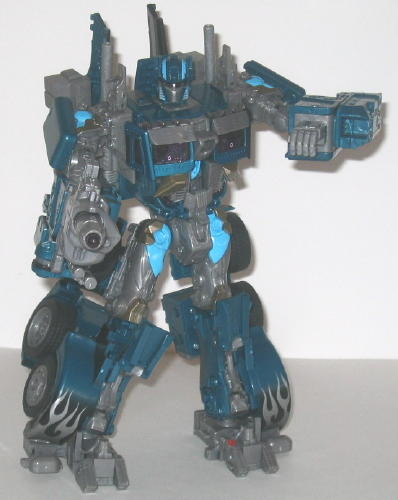
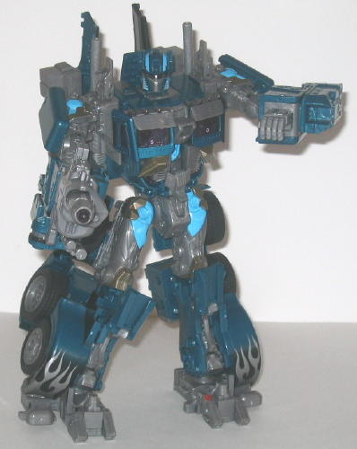

(NOTE: Because this is a repaint, this is not a full-blown review. This mainly covers any changes made to the mold and the color scheme, and merely compares it to the original Movie Leader class Optimus Prime toy. For a review on the mold itself, read the review of the original Movie Leader class Optimus Prime toy here .)
A truly original Optimus
Prime repaint that's neither a G1 homage, an Ultra Magnus homage, or a
"Nemesis Prime" repaint is something that occurs rarely, but Nightwatch
Optimus Prime here is the exception to the usual rule. Nightwatch Prime
still keeps the same trademark flame decos in truck mode that are a hallmark
of his movie self, but they're silver this time, with the main color a
WONDERFUL shade of metallic greenish aquamarine. Honestly, pictures do
not do this shade of color justice-- it literally makes the toy. A duller
aquamarine would have still made for a nice-looking toy, but this particular
shade just makes it look FANTASTIC. The other accent colors, however, still
look great. The electric "Allspark Power" blue that's a requisite color
for all toys in the subline looks very well against the aquamarine, and
the dull gray helps to ground the color scheme in reality a little, though
making the gray a bit more silverish in shade would have worked even better.
The black fade patterns used primarily in vehicle mode also blend in extremely
well with the gray and aquamarine-- not to mention they're what makes Nightwatch
Optimus Prime NIGHTwatch Optimus Prime-- and the purple windows, while
at first a little odd-looking for the mostly realistic movie line, fit
in well color-wise with the other colors. It's not used much, but the pale
gold used in certain spots in robot mode completes the overall color scheme,
and really just looks great against the electric blue especially.
No mold changes have
been made to Nightwatch Optimus Prime-- his electronic sounds & effects
remain the same as well.
It takes a lot for me
to wholeheartedly recommend a repaint of a $40 toy, but Nightwatch Optimus
Prime pulls it off. All of his colors-- especially the aquamarine-- come
together very well to pull off a very eye-catching, and wholly original,
color scheme.
Review by Beastbot